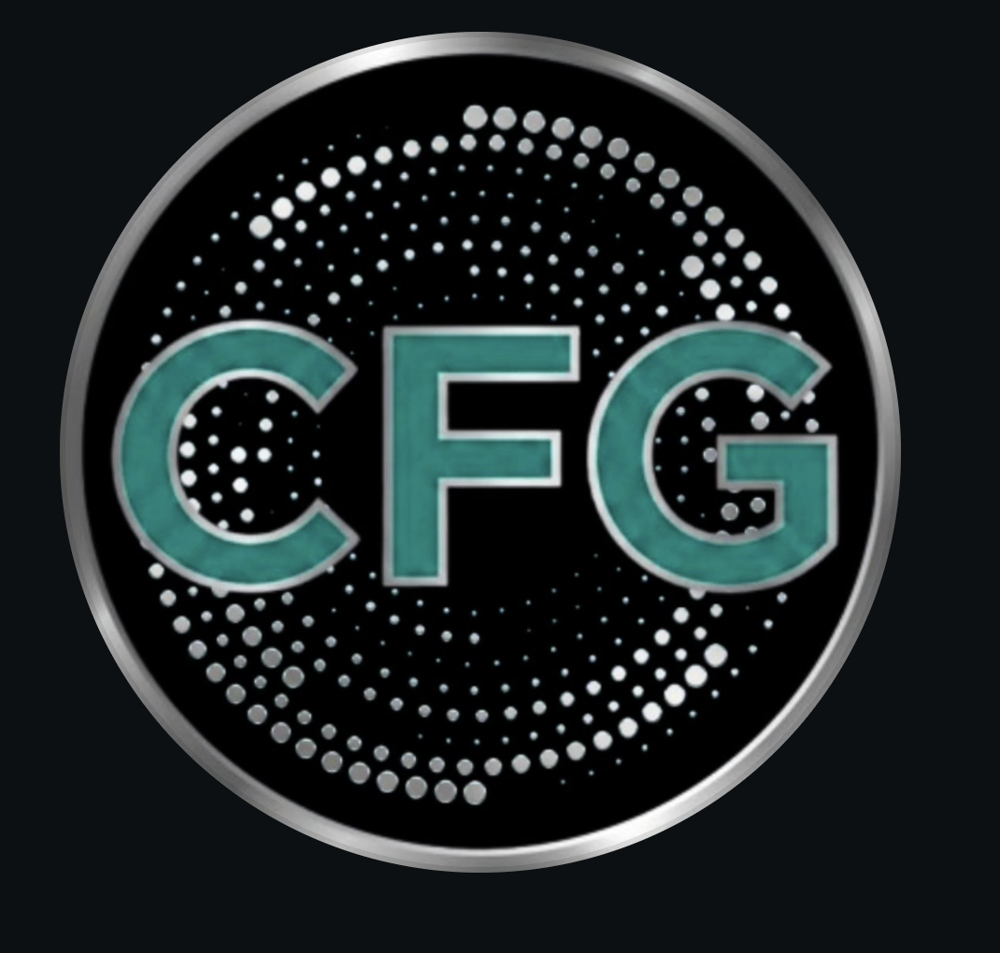
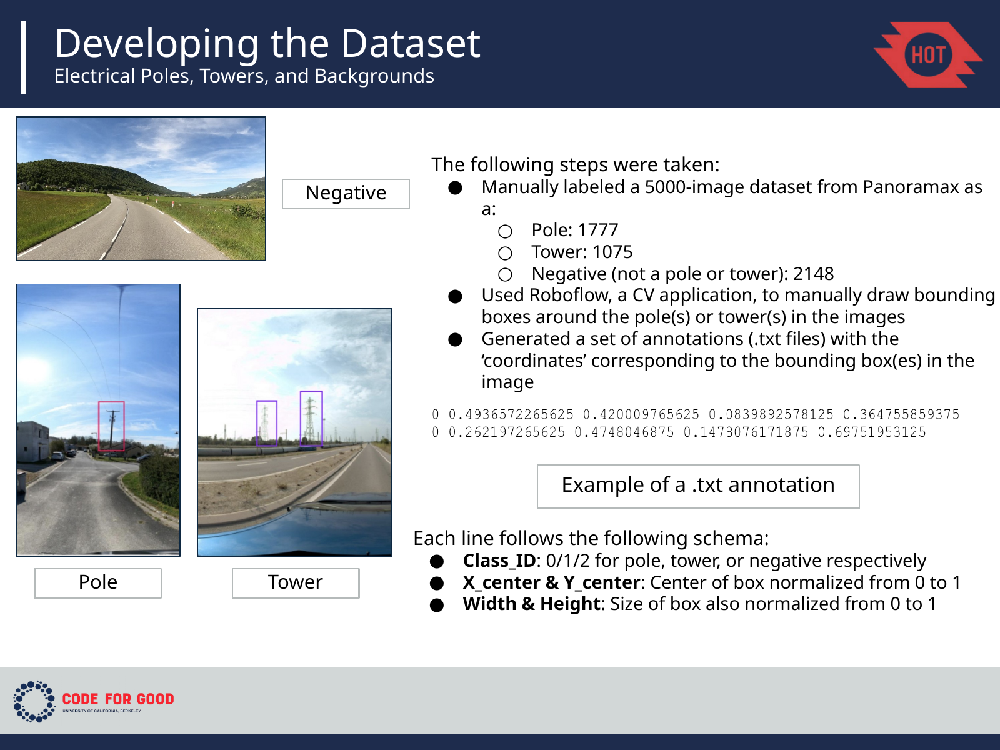
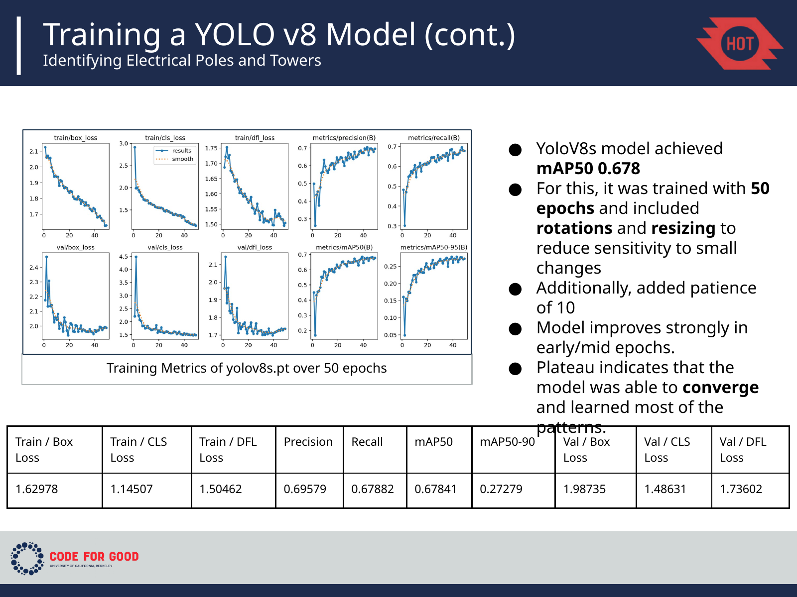
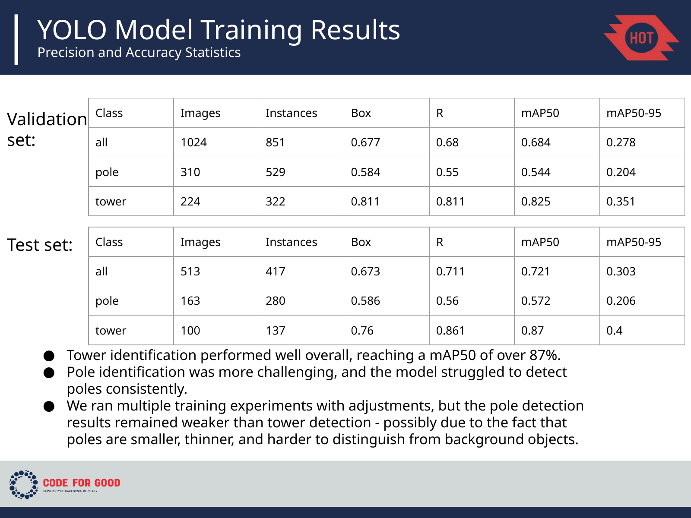

Humanitarian OpenStreetMap Team
Humanitarian OpenStreetMap Team is a global humanitarian mapping organization that uses open geospatial data for disaster response. This project was a collaboration with Code for Good, a UC Berkeley tech club building software, data, and AI projects for social impact.

Turning street imagery into usable infrastructure data.
The project aimed to build a reusable pipeline that converts street-level imagery into standardized OpenStreetMap tags for humanitarian mapping. The computer-vision team focused on detecting electrical poles and towers.
Building the ground truth before training the model.
The team manually labeled a 5,000-image Panoramax dataset with pole, tower, and negative examples, drew bounding boxes in Roboflow, and added imagery from Mapillary.


Understanding where the detector failed.
I worked on evaluation of the normalized confusion matrix. Towers were detected much more reliably than poles; poles were frequently missed or confused with background because they are thin, small, and often visually ambiguous.

Improve robustness where the model struggled.
- Expand negative samples to reduce false positives.
- Train a larger YOLOv8 model with higher-resolution imagery.
- Target difficult cases such as occlusions, shadows, trees, and crowded streets.
- Compare performance across environments rather than relying on one aggregate metric.